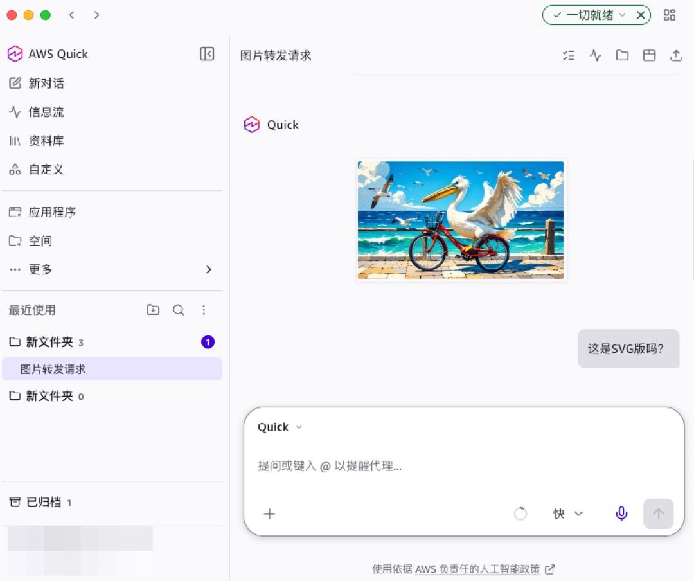
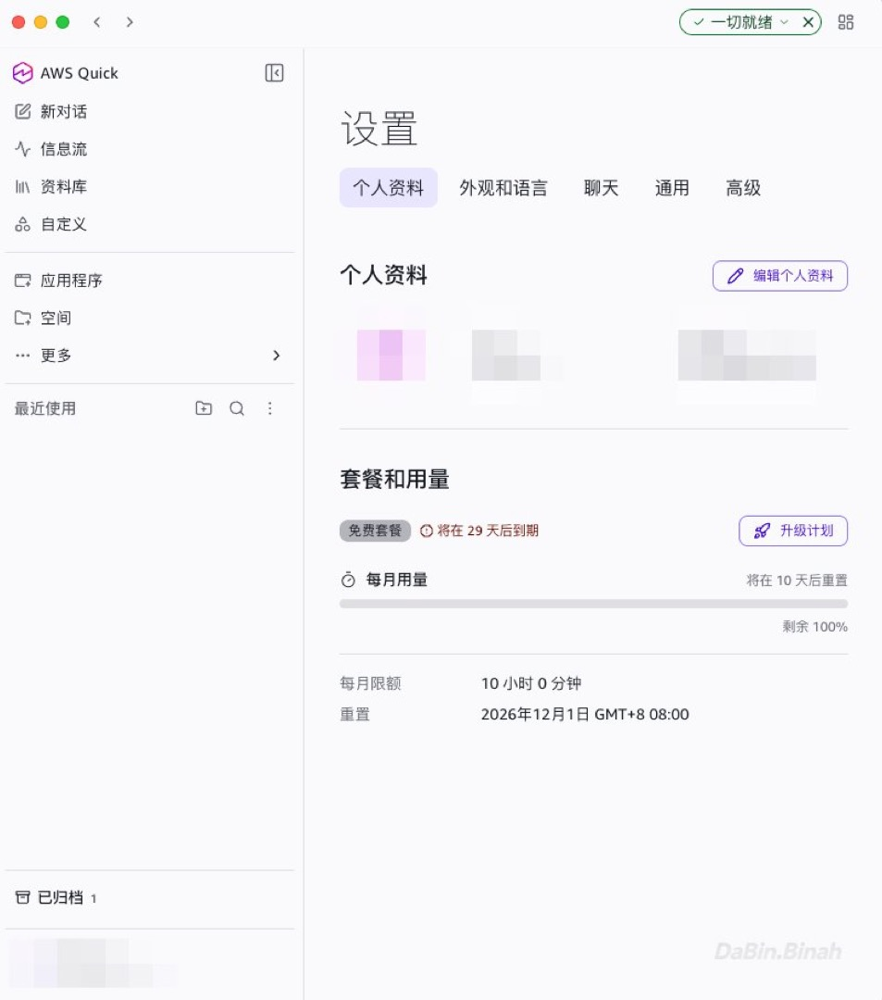
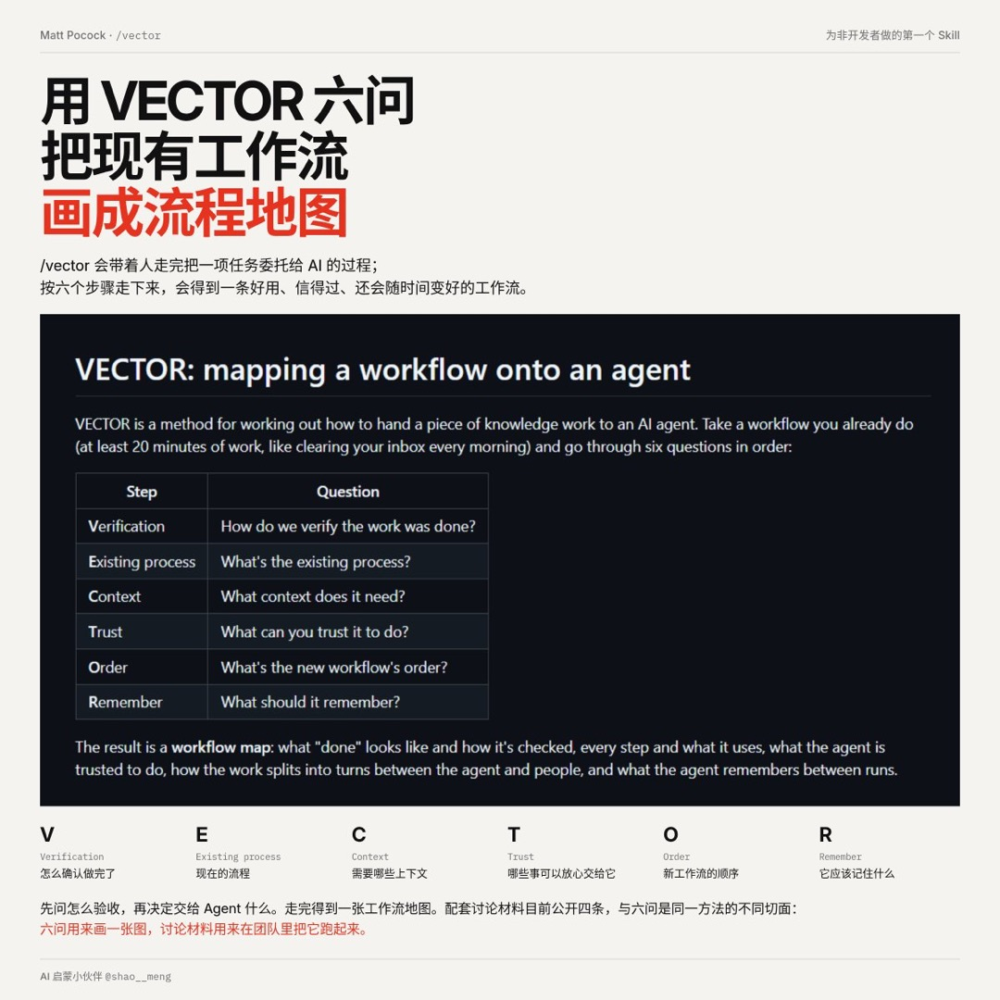
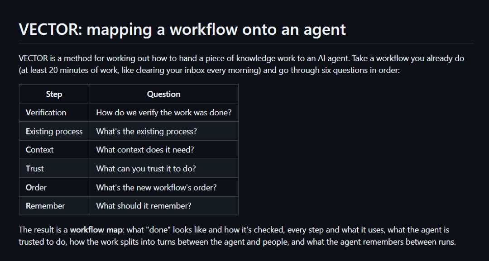
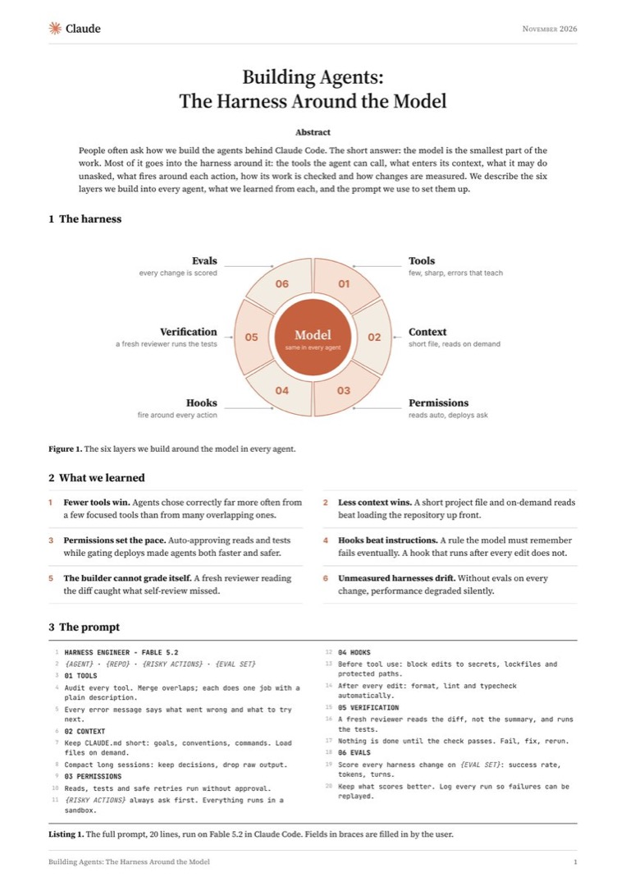

本期速览
01 Harness是组合化泛化关键机制
02 Claude Code生产密钥泄漏防护
03 Kimi海外算力合同因美国新规取消
04 Antigravity缓存扩容提效20%
08 Anthropic Agent六层构建法
09 混元AMA：稀疏度并非越高越好
01｜Harness是组合化泛化关键机制
来源（X） · @Xudong07452910 · 2026-11-21 11:40
以前搭 Harness，更多是在给能力不够的模型兜底。alex zhang 他们的新论文认为，现在模型强了，Harness 的作用变成了把模型已有的能力组合起来，让它能处理更长、更复杂的任务，甚至是训练里没见过的任务。
我觉得最有意思的是这个思路：把长任务拆成很多次小调用，让每一次调用都落在模型熟悉的范围里。这样训练时就不用跑完整条很长的流程，用合成任务加模拟的工具调用和子 Agent，单独训练其中一次调用就行，省数据也省时间。
自己做 Agent 产品下来，感觉也差不多。模型升级以后，Harness 里确实有不少东西可以删掉，但怎么拆任务、怎么调度子 Agent，这些设计会更重要。
目前论文、代码和数据都开源了，做 Agent 的朋友可以去翻翻。
引用内容
alex zhang @a1zhang
中文译文
Harnesses 曾经是弱 LLM 的拐杖。到了 2026 年及以后，随着模型变强，harness 现在提供了一种机制，用于组合 LLM 的现有能力和新能力，使其泛化远超训练环境。
在我们的新论文《LM Harnesses are Compositional Generalizers》中，我们探讨了各种 harness 抽象如何使 LM 系统通过组合现有 LLM 能力，在任务长度、任务策略、递归任务深度等方面实现泛化。这些抽象提供了一种更加数据高效的训练手段，尤其是在长任务上——通过保持轨迹在局部上属于分布内（LID），也就是说，让每一个单独的 LLM 调用都处于分布内。
对于需要非常长时间才能展开的任务，这意味着我们甚至可以进行替代 harness 训练，即用纯合成任务（带有假工具调用和子代理！）来训练单个 LLM 调用，而不是进行极长的 harness 展开。
一个常见的流行观点是 LLM 会吸收 harness 并使其过时。我们不赞同，并认为我们还没有充分探索 harness 能提供什么。
完整论文、日志、代码库和数据均可获取：https://www.alphaxiv.org/abs/2611.harness-cg
与 @SOURADIPCHAKR18 @lateinteraction 合作
原文
Harnesses used to be a crutch for weak LLMs. In 2026 and onward, with stronger models, harnesses now offer a mechanism for composing an LLM’s existing and new capabilities to generalize well beyond their training environments.
In our new paper, LM Harnesses are Compositional Generalizers, we explore how various harness abstractions enable LM systems to generalize over task length, task strategies, recursive task depth, and more through composing existing LLM capabilities. These abstractions provide a means for more data-efficient training, especially over long tasks, by keeping trajectories locally in-distribution (LID) — i.e., shaping all individual LLM calls to be in-distribution.
For tasks that take a very long time to roll out, this implies that we can even perform surrogate harness training, meaning we train an individual LLM call instead of doing the very long harness rollout, using purely synthetic tasks, with fake tool calls + sub-agents!
A common idea floating around is that LLMs will absorb harnesses and make them obsolete. We disagree, and argue that we haven’t sufficiently explored what harnesses can provide.
The full paper, logs, codebase, and data are available: https://www.alphaxiv.org/abs/2611.harness-cg
w/ @SOURADIPCHAKR18 @lateinteraction
02｜Claude Code生产密钥泄漏防护
来源（X） · @mylifcc · 2026-11-22 00:02
团队里的一名初级工程师在跑数据库迁移脚本时卡在了 Schema 报错上。为了图快，他直接从生产环境配置里把包含明文管理员密码的完整数据库连接串（Connection String）复制出来，原封不动贴进了 Claude Code 的终端对话框里。不得不说模型确实好使，只花了 4 分钟 就帮他精准定位并修好了迁移冲突。
但当 Tech Lead 发现后要求立刻全量轮换生产数据库密码、滚动重启所有线上服务（前前后后折腾了 1 个小时）时，这位新人并没有顶嘴，而是非常诚恳地反问了一句让很多技术主管一时接不上来的话：
“我们用的不是公司付费的 Claude 企业版（Business Plan）账号吗？官方协议承诺过绝不拿我们的数据训练模型，这个密码还能跑到哪儿去？”
底下五百多条一线架构师与安全工程师的回复，把“企业版不训模型 ≠ 可以裸贴生产密钥”的四个致命盲区彻底扒清了：
1. 本地明文会话日志（Transcript）落盘：你贴进 Claude Code 的每一个字符，都会以纯文本 JSONL 格式实时写进你笔记本磁盘上的本地会话目录里。一旦开发机装了未沙盒化的第三方插件、同步盘，或者几个月后像最近爆出的恶意技能包那样去扫本地 .claude 历史记录，生产库密码就是躺着任人拿。
2. 多 MCP 工具链的上下文串门：在多工具协同的会话里，放进主上下文的明文连接串，很容易在后续轮次被模型当成上下文摘要或参数，顺手转发给挂载在同一个会话下的第三方 MCP 服务、日志分析插件或 Web 抓取工具。
3. 破窗效应：如果团队默认“因为是企业号所以贴生产密码没关系”，不出两周，私钥、Stripe 生产 Secret、客户 PII 就会出现在各种临时调试脚本和 Git 提交历史里。
真正成熟的 Agent 团队从来不靠考验新人的安全自觉，而是从工具链上直接把“手贴密码”的路堵死：本地调试统一走 1Password CLI（op run） 或 Infisical 在子进程拉起瞬间按环境变量注入凭证，让 Agent 可以正常执行数据库诊断命令但上下文里永远见不到明文；同时在项目的 .claude/settings.json 里配一道 UserPromptSubmit / PreToolUse Hook，一旦正则扫出 postgres://、mysql:// 带密码串或高熵 Token，直接在本地终端拒绝发送。
03｜Kimi海外算力合同因美国新规取消
来源（X） · @laopai1990 · 2026-11-20 23:37
Kimi K4 训练不出来？不是。
是现在没算力去训了，租的都没。
The Information 爆料，月之暗面原本谈好一笔 1.5 亿美元的海外算力合同，
地点在印尼，用的是英伟达 B300，
甚至愿意接受 50% 的预付款，
结果美国新规一出，交易直接取消...
而 DeepSeek 那边，据传正在乌兰察布规划吉瓦级智算中心，准备部署大规模华为昇腾集群。
这俩人完全是走的两条路：
杨植麟想尽办法获取海外先进算力，
梁文锋押注国内自建算力基础设施。
兄弟们觉得，谁有先见之明？？
04｜Antigravity缓存扩容提效20%
来源（X） · @dotey · 2026-11-21 14:58
比如这条：Antigravity 正在通过大幅扩容缓存池，将 Neon 的缓存命中率提升约 4%，能让同等配额下可完成的任务量至少提升 20%。
由于之前配额消耗过快，更新完成后会重置一次配额！
引用内容
Varun Mohan @_mohansolo
中文译文
我们正在推出一项更改，通过大幅增加缓存池大小，将 Neon 上的缓存命中率在 Antigravity 上提升约 4%。这将使你在配额内能完成的工作至少增加 20%。
完成后会进行一次重置，因为它消耗配额的速度更快了！
原文
We’re rolling out a change to increase cache hit rate on Neon by around 4% on Antigravity by massive increasing the cache pool size. This will increase what you can get done in quota by at least 20%.
Will issue a reset after it’s done since it burned quota faster!
05｜AWS-Quick免费用Opus 5.5
来源（X） · @yedabinbinah · 2026-11-21 20:46
AWS-Quick是亚马逊旗下的办公AI，类似于中国的WordBuddy
背后的模型是 Claude Opus 5.5满血版
根据AI输出的时间来计算的，不是按Token，10小时输出，实际可以用挺久
客户端只有windows 和 mac，免费版每月 10 小时，每月1号重置
重点：有亚马逊账户的授权登录就能用，多个亚马逊账户可以切换用
URL：https://aws.amazon.com/cn/quick


06｜VECTOR六问画出AI工作流地图
来源（X） · @shao__meng · 2026-11-21 09:15
/vector 会带着人走完把一项任务委托给 AI 的过程；按六个步骤走下来，会得到一条好用、信得过、还会随时间变好的工作流。他计划一并放出配套框架和文档，方便公司自己组织 VECTOR 讨论。
先问怎么验收，再决定交给 Agent 什么
VECTOR 用来想清楚：怎样把一块知识工作交给 AI Agent。先拿一条自己已经在做、至少要花 20 分钟的流程，比如每天早上清理收件箱，再按顺序回答六个问题。
1. Verification，怎么确认这件事做完了
2. Existing process，现在的流程是怎样的
3. Context，它需要哪些上下文
4. Trust，哪些事可以放心交给它
5. Order，新工作流该按什么顺序走
6. Remember，它应该记住什么
走完之后，得到的是一张工作流地图：做完是什么样子、怎么检查，每一步用什么，Agent 被允许做哪些事，人和 Agent 之间怎么分轮交接，以及两次运行之间它该记住什么。
他计划给公司用的讨论材料，目前公开的四条是：找出 AI 能帮忙的工作流，给 Agent 配上合适的上下文，重新安排流程顺序，再找出靠记忆随时间变好的办法。这四条和六问是同一套方法的不同切面：六问用来画一张图，讨论材料用来在团队里把它跑起来。

引用内容
Matt Pocock @mattpocockuk
中文译文
正在为非开发者制作我的第一个 skill
它叫 /vector，引导你如何将任务委派给 AI。
六个简单步骤，你就能获得一个易于使用、易于信任、且会随时间改进的工作流
我计划围绕它发布框架和文档，这样你可以在自己的公司运行你自己的 VECTOR 会话：
- 找到 AI 可以帮助的工作流
- 给 agent 正确的上下文
- 重新排列工作流
- 识别它随时间改进的方式（通过记忆）
即将发布。你会使用它吗？
原文
Cooking my first skill for non-devs
It's called /vector, and it guides you on how to delegate AI for any task.
Six simple steps, and you'll have a workflow that is easy to use, easy to trust, and gets better over time
I'm planning on releasing frameworks and docs around it so you can run your own VECTOR sessions at your company:
- Find workflows that AI could help with
- Give agents the right context
- Reorder the workflow
- Identify ways it can improve over time (via memory)
Releasing soon. Would you use this?

07｜Zapret本地改包干扰DPI绕过封锁
来源（X） · @0xbawan · 2026-11-21 23:06
俄罗斯人翻墙，竟然压根不用 VPN！！🤯
在俄罗斯技术圈，大家最推崇的根本不是传统代理，而是一款名叫「Zapret」的纯本地开源翻墙工具。
它的路子野到什么程度？
既不需要花钱买海外 VPS
也不用折腾任何机场订阅
更不依赖境外代理服务器
直接装在 Windows、Linux 或者 OpenWrt 软路由上就能本地开跑
核心原理说白了就是「本地硬刚」：
在网卡发包的那一瞬间，直接切分并修改网络数据包特征，精准干扰运营商的 DPI（深度包检测）设备，让审查系统看花眼，从而直接绕过部分网络封锁和限速。
对比一下两边的画风简直太真实了：
中国人翻墙，天天钻研 Reality、HY2 协议怎么伪装得滴水不漏，到处抢 VPS、测机场线路
俄罗斯人翻墙，连中转服务器都懒得搭，直接研究怎么在本地把审查设备给绕晕！
战斗民族果然是能正面解决问题，绝不跟你玩躲猫猫！！！🤣🔥
https://github.com/bol-van/zapret
08｜Anthropic Agent六层构建法
来源（X） · @0xTrackmind · 2026-11-22 00:11
中文译文
这篇 Anthropic 论文简直是他*的黄金
Anthropic 刚刚揭示了他们如何构建自己的 agent。不是模型。而是他们围绕模型构建的一切。
他们构建到每个 agent 中的 6 层：
1/ 工具
6 个精炼的工具，而不是 20 多个重叠的工具。每个错误都会告诉 agent 下一步该尝试什么。
2/ 上下文
一个简短的 CLAUDE.md。文件仅在需要时加载。绝不把整个仓库一次性加载。
3/ 权限
读取和测试自动运行。部署和删除始终询问人类。
4/ hooks
他们不会要求模型记住去 lint。一个 hook 在每次编辑后进行 lint。
5/ 验证
agent 从不给自己的工作打分。一个全新的 reviewer 会阅读 diff 并运行测试。
6/ 评估
harness 的每次变更在发布前都会被打分。
同样的模型。完全不同的结果。差异在于围绕它的一切。
他们甚至把所有 6 层打包进了一个 prompt。粘贴到 Claude Code 中，它会为你构建 harness。
6 层。1 个 prompt。0 个死循环。
完整的拆解在下面的 Harness Engineering 指南中 ↓
原文
this Anthropic paper is f*cking gold
Anthropic just revealed how they build their own agents. not the model. everything they put around it.
the 6 layers they build into every agent:
1/ tools
6 sharp tools, not 20+ overlapping ones. every error tells the agent what to try next.
2/ context
a short CLAUDE.md. files loaded only when needed. never the whole repo on turn one.
3/ permissions
reads and tests run on auto. deploys and deletes always ask a human.
4/ hooks
they don't ask the model to remember to lint. a hook lints after every edit.
5/ verification
the agent never grades its own work. a fresh reviewer reads the diff and runs the tests.
6/ evals
every change to the harness gets scored before it ships.
same model you use. completely different results. the difference is everything around it.
they even packed all 6 layers into one prompt. paste it into Claude Code and it builds the harness for you.
6 layers. 1 prompt. 0 infinite loops.
full breakdown in the Harness Engineering guide below ↓

引用内容
Trackmind @0xTrackmind
中文译文
原文
09｜混元AMA：稀疏度并非越高越好
来源（X） · @AI_Whisper_X · 2026-11-21 17:37
1/ 稀疏度不是越高越好。他们做过 scaling ladder 实验，结论是激活参数固定时，提高稀疏度确实能提效率；但总参数不变、去砍激活参数，模型会明显变弱。
激活参数量本质上决定了你的计算预算。
太稀疏的 MoE 对推理也不友好，占着大量显存，算力却用不满。（不算 Engram，Hy4 flash 的激活比例是 7.7%，Qwen3.8-Flash 是 4.8%，DeepSeek V4.1 是 2.9%）
2/ 为什么还在做 700B 和 200B。字节、Kimi 已经往 3T、5T 推了。但团队觉得，Hy3 和 Hy4 已经证明，做扎实的小一点的模型，往往能打赢更大的模型，成本还更低，过程中你能学到更多。
当然，他们仍相信 scaling，下一代会明显做大，只是不急着追参数。
3/ 更强调通用能力，还要补写作。问两个模型是偏编程还是通用，回答就两个字，通用。有用户说大模型的写作能力在退化，团队说他们也注意到了，可能和训练目标有关，希望模型写得更像人、少些套路，创意写作和可读性已经列成重点改进方向。
现在各家都在卷 coding，但他们很明确不做偏科模型。
4/ 后训练最难改进的是过度思考。问后训练阶段最难改善什么行为，回答就一个词，Overthinking。这个非常合理，我之前用 Hy3 的时候就觉得有点过度思考。Hy4 虽然明显改善，但团队也说，Hy4 的目标是把智力堆上去，CoT 长是已知问题，但正好可以拿它蒸馏出 flash，flash 再用 RL 把 CoT 压短。
另外还聊了网络层怎么调、GQA 和 MLA 怎么取舍、flash 为什么选 SWA、Hy4 为什么用门控 DSA，还有量化、红队测试、本地部署，都偏技术，感兴趣的可以看原帖。
混元这个月先后开源了 Hy4（770B-A49B）和 Hy4 flash（224B-A12B）。两个模型一个走智力密度，一个走性价比。尤其是 Hy4 flash，单任务成本只有 Hy4 的二十分之一。
看完这个 AMA，我觉得非常非常真实，问到的问题基本都正面答了。
这就是一个懂行的科学家、年轻人带队的好处，不追求评测、不追求刷榜，即使做得慢点，即使不是阶段性的第一。
· · ·
最后说下我对混元今年的看法。
今年国内开源模型里，混元确实是进步最快的之一。从之前的路边，到在圈子内有声音、到模型采用率上来，甚至现在混元是大厂里边我最看好的两家之一。
回头看，
4 月 Hy3 preview；
7 月 Hy3 正式版，295B-A21B；
8 月底 Hy4 preview，770B-A49B；
11 月 Hy4 正式版，两周后就是 flash。
差不多两个月一个大版本，每一版都往前挪一点点。
最近的 Hy4 flash，主打速度快、效果好、性价比高，开源之后调用量也确实起来了。单任务成本是 Hy4 的 1/20，解码速度 150 到 200 token 每秒，峰值每秒处理超过 10 亿 token。Hy4 挤进开源最强的一档，紧接着用一个 flash 版本把性价比打下来，模型能力和商业化，都走到了一个挺有利的位置。
另一件做成的事是 WorkBuddy。WorkBuddy 做出来了，有足够多、足够杂的真实用户，模型好不好用，产品能看到最真实的数据。flash 的 WorkIndex 就是从 WorkBuddy 的真实任务里来的。
我们之前写姚顺雨的时候聊过他的观点，现在的秘方越来越标准化，再难的 benchmark 也很快会被平推，下半场要追求的是真实世界的效用。
这次 AMA 看下来，一以贯之。
原帖：https://www.reddit.com/r/LocalLLaMA/comments/1y15w4a/tencent_hy_team_shunyu_yao_here_ask_us_anything/
10｜MIT制造课新增边缘AI与Agent
来源（X） · @fishjar · 2026-11-20 19:07
课程编号 MAS.863，官网就是一份现成的自学路线图。
这门课有意思的地方是，它不满足于让学生只会写代码、画电路图或者设计 3D 模型，而是要求他们真正把东西做出来。不按传统机械、电子、计算机专业拆分，而是逼着学生在三个月里每周攻克一个物理制造环节：
- 结构与加工：CAD 参数化建模、激光切割、3D 扫描与打印、大型 CNC 数控铣削、模具设计与浇铸
- 电子与嵌入式：EDA 原理图与 PCB 布局、桌面雕刻机亲手铣板焊接、传感器输入与电机驱动输出
- 通信与智能：Mesh 组网、上位机界面开发，以及 2026 年课表里新加的 AI Agent 与边缘端 AI（Edge AI）实战
官网上不仅挂着完整的每周课表和工具清单，还能直接点进历届学生的个人主页，看他们每周踩了什么坑、怎么一步步把零件拼成能跑起来的机器。
课程主页：https://fab.cba.mit.edu/classes/MAS.863/